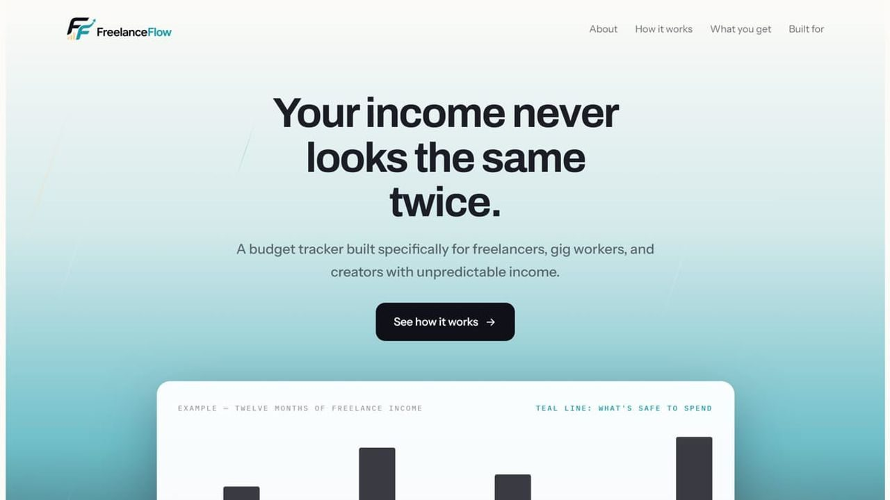
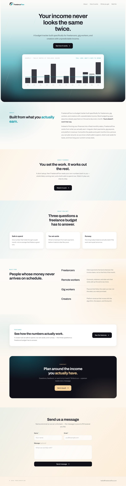
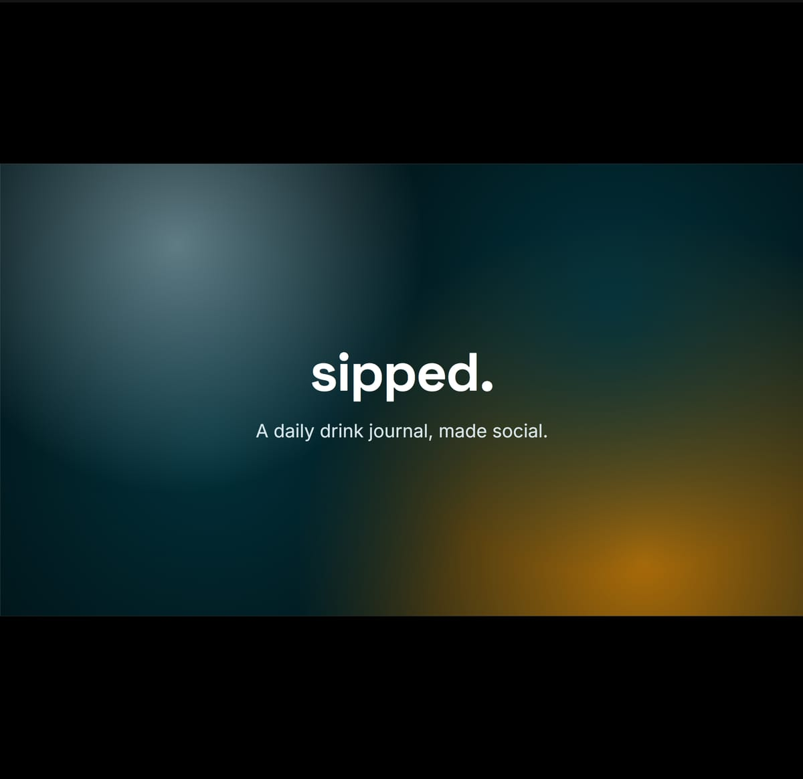
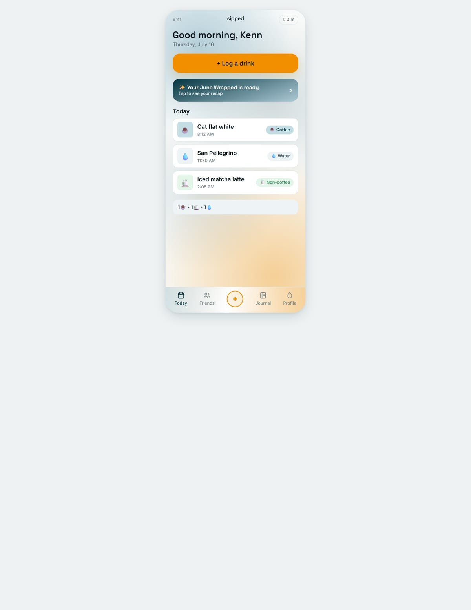
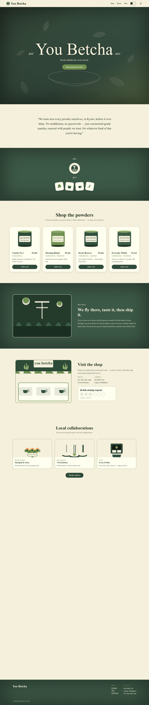
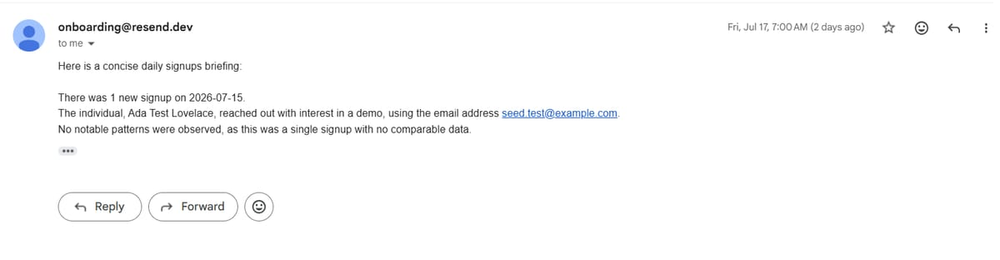

Registered Electronics & Communications Technician working construction estimating and virtual assistance — blueprints, take-offs, and inboxes, kept precise.
Download Résumé ↓I'm Peter Kenneth Gutierrez, a Registered Electronics & Communications Technician working construction estimating and virtual assistance. I run material take-offs, check blueprints against US Building Codes, and use AI-powered estimating tools on live projects.
I pair that with inbox management, documentation, and workflow support, plus direct client conversations. I work methodically: verify against spec, document as I go, automate the repeatable parts. Accuracy prevents costly change orders.
View Résumé ↗

A budgeting app for people with irregular income — a safe-to-spend number, automatic tax set-aside, and runway tracking. I also built its internal submissions dashboard, reading live from Supabase.

The pitch for Sipped, the social drink journal — problem, solution, the friends feed, and the monthly "Wrapped" recap, told as a colorful slide story.

A social drink-tracking app for logging coffee, water, and tea — a friends feed, a journal calendar, profile streaks, and a monthly "Wrapped" recap.

A brand landing page for a Kyoto matcha label — ceremonial-grade powders shipped worldwide, with a shop, a sourcing story, and local collaborations.

An automated daily digest that pulls yesterday's signups, summarizes them with AI, and emails the team every morning on a schedule.
Something new is in the works — a new build lands here soon.